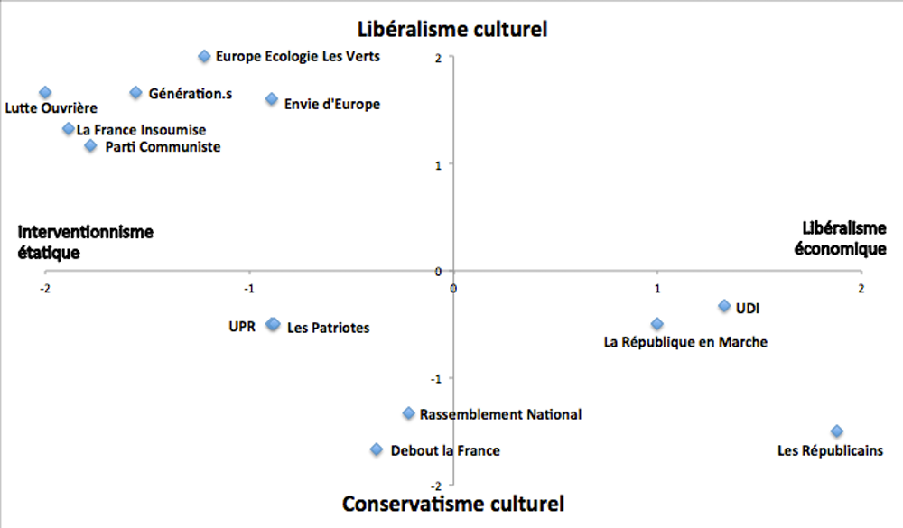

Le rôle essentiel des partis politiques est de participer à l’animation de la vie politique. L’article 4 de la Constitution dispose : "Les partis et groupements politiques concourent à l’expression du suffrage". De manière plus précise, les partis remplissent deux fonctions : - Ils sont les intermédiaires entre le peuple et le gouvernement. Le parti élabore un programme présentant ses propositions qui, s’il remporte les élections, seront reprises dans le projet du gouvernement. Les partis de l’opposition peuvent proposer des solutions alternatives à la politique de la majorité en place et ainsi remplir une fonction "tribunitienne" (selon l’expression célèbre de Georges Lavau, qui renvoie aux “tribuns de la plèbe” sous l’Antiquité romaine), en traduisant le mécontentement d’un certain électorat populaire. Cependant, on note depuis quelques années une certaine désillusion des citoyens envers les partis, qu’ils ne considèrent plus forcément comme leurs meilleurs représentants et intermédiaires. L’augmentation du taux d’abstention aux différentes élections traduit peut-être cette réalité ; - Les partis ont aussi une fonction de direction. Ils ont pour objectif la conquête et l’exercice du pouvoir afin de mettre en œuvre la politique annoncée. Si dans les régimes pluralistes (où existent plusieurs partis) la conception traditionnelle est que le pouvoir exécutif est en charge de l’intérêt national indépendamment des partis, ceux-ci assurent bien la conduite de la politique nationale, par l’intermédiaire de leurs représentants au gouvernement et dans la majorité parlementaire. Ils légitiment et stabilisent le régime démocratique, en le faisant fonctionner. Animateurs du débat politique, ils contribuent aussi à structurer l’opinion publique.
Les notions de droite et de gauche renvoyaient à la disposition des partis dans l'assemblée nationale en France depuis 1789. La droite, ayant un sens positif dans la culture, par exemple dans l'expression « être adroit », fut alors occupée dans l'assemblée par les royalistes et les partis soutenant le roi. Par opposition, la gauche de l'assemblée fut investie par les partis opposant au roi. Cette opposition en politique s'est étendue, depuis la France de 1789, dans une grande partie des systèmes politiques d'assemblée. La notion de clivage droite/gauche est née de cette opposition et les termes gauche et droite furent peu à peu utilisés pour qualifier des courants politiques, relativement au degré d'adhésion des idées des partis au régime de l'état en place. La droite et la gauche sont historiquement relatives à l'époque et au contexte du pays, par exemple la gauche de 1789 composée de libéraux et républicains s'est déplacée à la droite de l'assemblée au fur et à mesure que de nouveaux mouvements politiques sont apparus à gauche.